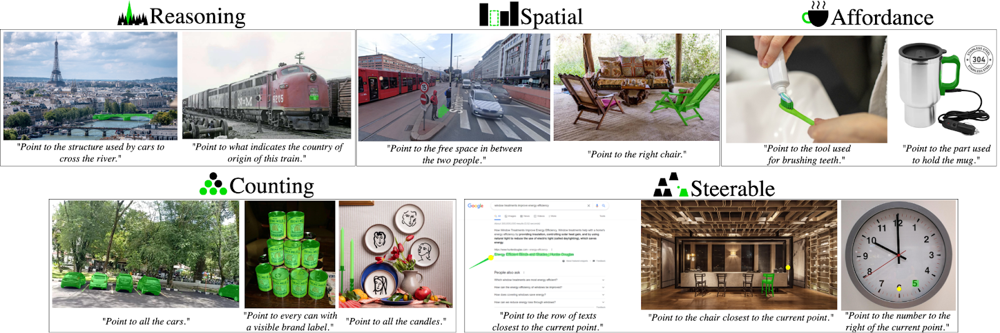

How to run: Fork the PointArena repo. Follow the PointArena README for setup, dataset download, config, and Point-Bench README for running evaluation. Wire your approach into the evaluation pipeline to get the scores.
Find your scores in the output JSON, and report these numbers in the Google Form:
| Score Name |
|---|
| Point-Bench Affordance |
| Point-Bench Spatial |
| Point-Bench Reasoning |
| Point-Bench Steerability |
| Point-Bench Counting |
| Point-Bench Average |
Use two decimal places (e.g. 74.10, 6.65) for the first 5 scores, and three decimal places for the final average score (e.g. 74.102, 6.650). The run you use for these numbers is the one we will verify.
Submit via the Google Form.
Important note: We will reproduce your results using your submitted code and checkpoints. In addition, to assess generalizability, we may evaluate your model on an unseen test split containing unseen images but the same question types (strictly no training on the test set).
You may update your Google Form submission at any time. We will only consider the highest score achieved by the same model or method at the end of the challenge. Final results will be determined by the organizers based on the official scoresheet and will be announced after the challenge concludes.
We will run your code and checkpoints with this repo's evaluation pipeline and confirm the reported scores. Please ensure:
chanhee-luke is added as a collaborator.For any questions or issues, contact the challenge organizer (Haoquan Fang) at hqfang@cs.washington.edu or raise a GitHub issue at PointArena.